01 · TERRE
La Terre, la vraie
Relief réel, nuages, jour et nuit, éclipses. On décolle du pas de tir, virage gravitationnel jusqu'à l'orbite.
Chaque pixel est un photon suivi à rebours dans l'espace-temps courbé par un trou noir en rotation. Ce que vous voyez, c'est ce que la relativité générale prédit — pas un effet visuel.
Le disque apparaît au‑dessus et au‑dessous du trou : ses rayons sont courbés par‑dessus l'horizon. Anneaux d'Einstein, images secondaires, ombre décalée par la rotation.
Le côté du disque qui vient vers vous brille et bleuit, l'autre s'éteint. La gravité rougit la lumière qui s'échappe des profondeurs.
La métrique conçue pour Interstellar : une sphère qui montre un autre ciel — notre Voie lactée d'un côté, Gargantua de l'autre.


1er janvier 2067, Kennedy Space Center. Le Système solaire est à l'échelle, chaque planète à sa vraie place. Gargantua attend derrière Saturne.
Relief réel, nuages, jour et nuit, éclipses. On décolle du pas de tir, virage gravitationnel jusqu'à l'orbite.

Sur son orbite réelle du jour. Rendez‑vous, approche, et amarrage au port Harmony.

Le tour de la Lune d'Artemis II, planifié en n corps et exécuté par l'ordinateur de bord.

Transfert interplanétaire, anneaux et ombres. Le trou de ver orbite 0,7 UA derrière.

Une autre galaxie dans une sphère. On y entre en visant juste.

Le Ranger autour du trou noir : les horloges du bord et celles de la Terre ne battent plus au même rythme.

L'océan, la glace, le désert. On s'y pose, on en redécolle.

La rentrée, le plasma, le plané, la finale et le toucher : chaque étape calculée, chaque instrument vivant.
Une vingtaine de commandes au pointeur, huit écrans à pages (PFD, orbite, navigation, systèmes, amarrage, plan, approche, atterrissage), les lumières de la cabine et de la coque.
Orage, brouillard, vent qui tourne avec l'altitude — ou le vrai METAR de la piste. Balisage, PAPI, guidage MLS, minima, remise de gaz.
Chaque autopilote affiche ses étapes, sa prédiction et son graphe : le couloir de rentrée, la pente d'approche, le Δv d'une poussée. Un rapport de vol noté sur 20.
Douze profils de HOTAS reconnus, ou le vôtre : chaque axe, sa courbe, sa zone morte, chaque bouton lié à une action.
Les annonces de finale, Houston avec le délai de la lumière, la coupure radio dans le plasma, la tour, la musique aux grands moments.


Le F‑35B — et le F‑35C des porte‑avions — au‑dessus de la vraie Terre. Son domaine de vol est mesuré contre les chiffres publiés : vitesse maximale, plafond, virage soutenu, rayon d'action, 7 g, 50° d'incidence. Tous dans leur fourchette.
Le manche demande un facteur de charge, établi en une demi‑seconde ; l'avion tient 50° d'incidence sans jamais partir en vrille. En loi directe, sans calculateur : super‑décrochage et vrille, dont on sort en lâchant tout.
Soufflante, trappes et tuyère orientable : le stationnaire, l'appontage vertical, le décollage court depuis un pont.
L'écran panoramique tactile dessiné en direct — carte tactique, moteur, carburant, STOVL, check‑lists — et la symbologie du casque à la place d'un HUD.
Voile gris, voile noir, perte de connaissance à 9 g tenus, voile rouge sous −1,5 g ; la vapeur arrachée à l'aile, la respiration au masque, le grondement du réacteur et le crépitement de la postcombustion.
De la loi directe au mode débutant — on vise, l'avion y va. L'Auto‑GCAS et l'Auto‑ACAS du vrai F‑35 reprennent la main avant le sol ou la collision.
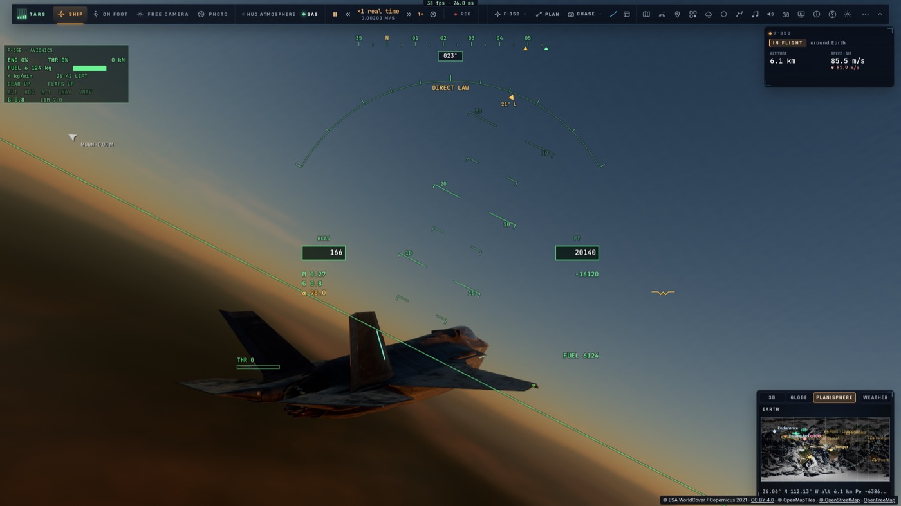
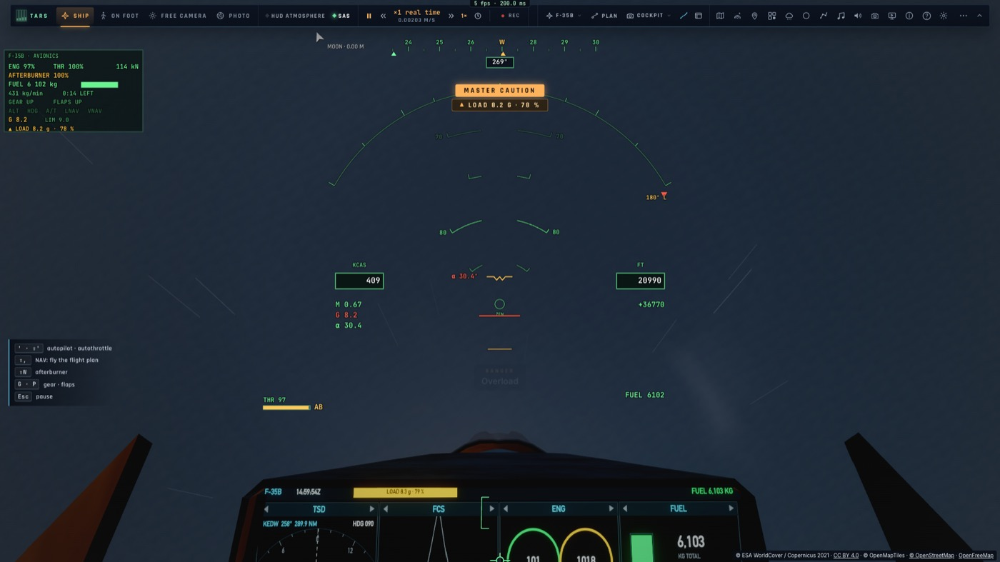
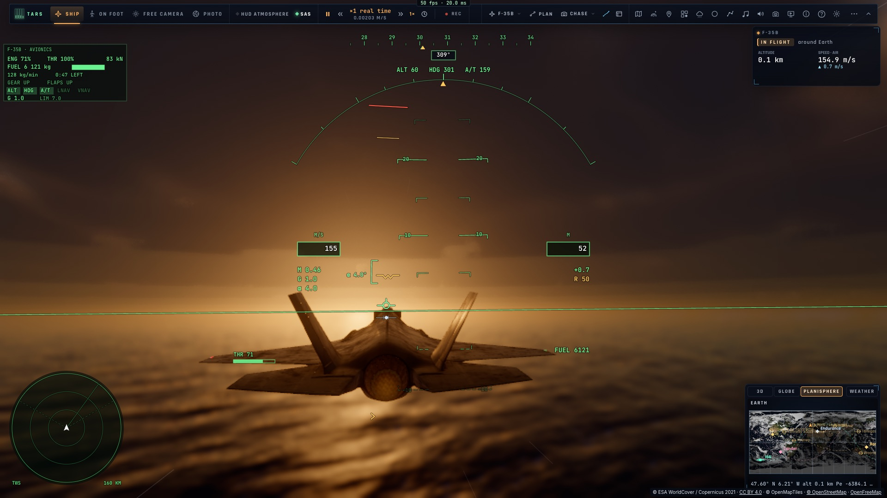
Le radar AN/APG‑81 s'allume dès que le F‑35 quitte le sol, en combat ou non. Ce qu'il voit, le HUD le nomme ; ce qu'il verrouille, l'avion sait le rejoindre — et l'abattre.
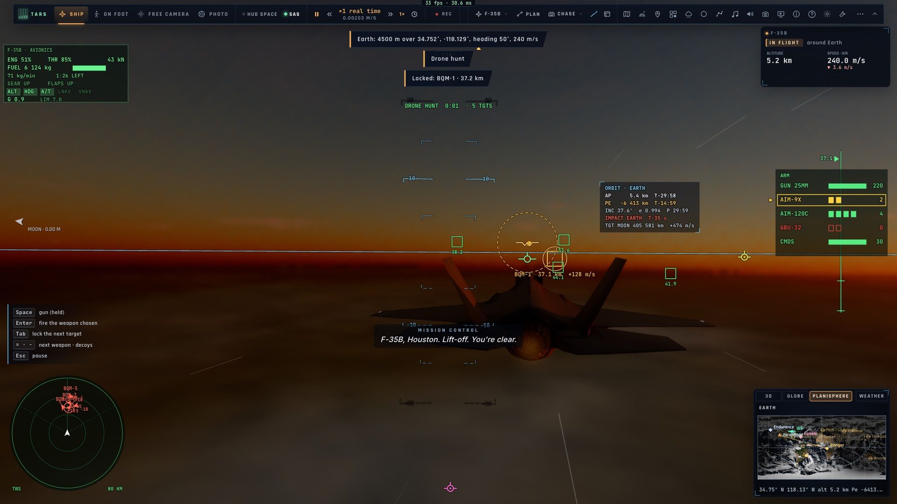
Le faisceau balaie ±60° en 2 s ; la portée dépend de la taille de la cible ; l'horizon, le relief réel et l'encoche Doppler la cachent. RWS, TWS, STT, l'IFF et la liaison de données.
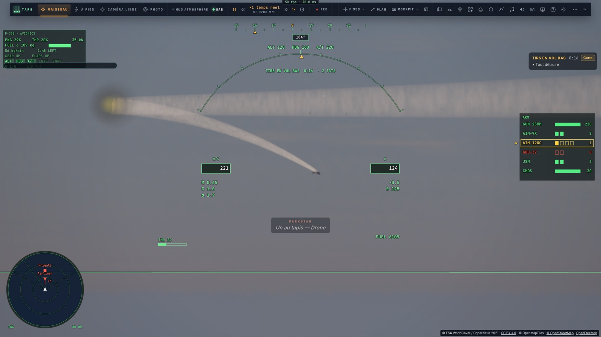
AIM‑120, AIM‑9X, bombes guidées, JSM antinavire, leurres et paillettes. Touché, l'appareil fume ; détruit, il part en vrille dans sa fumée jusqu'au crash — et la tête du pilote peut le suivre.
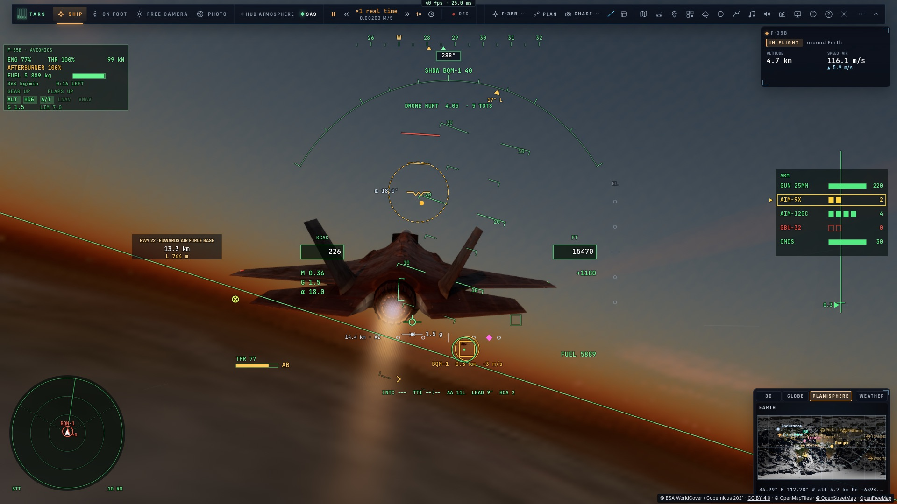
Cap de collision, temps avant la rencontre, aspect. ⇧Tab vole la conversion par l'arrière jusqu'à 300 m derrière la cible — même un vrai avion de ligne.
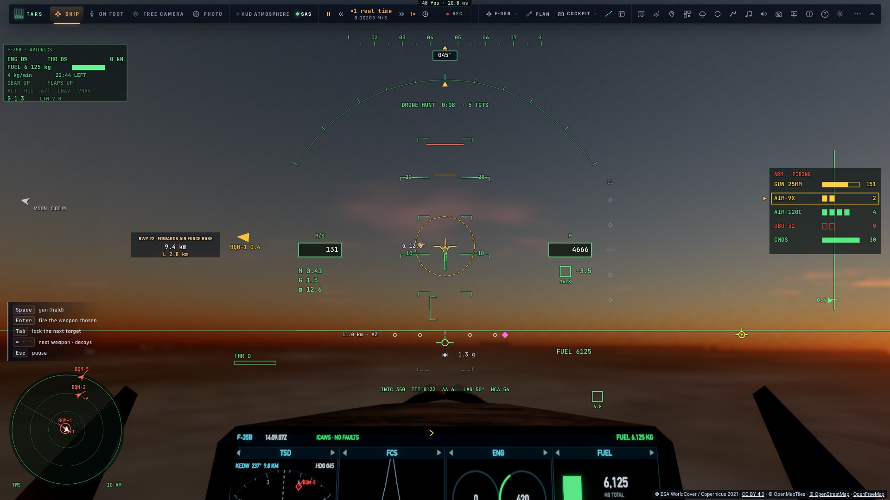
Le collimateur anticipe le virage de la cible : sur un chasseur à 5 g, 86 % des obus au but à 1 000 m. L'entonnoir et les traçantes, comme sur le vrai.
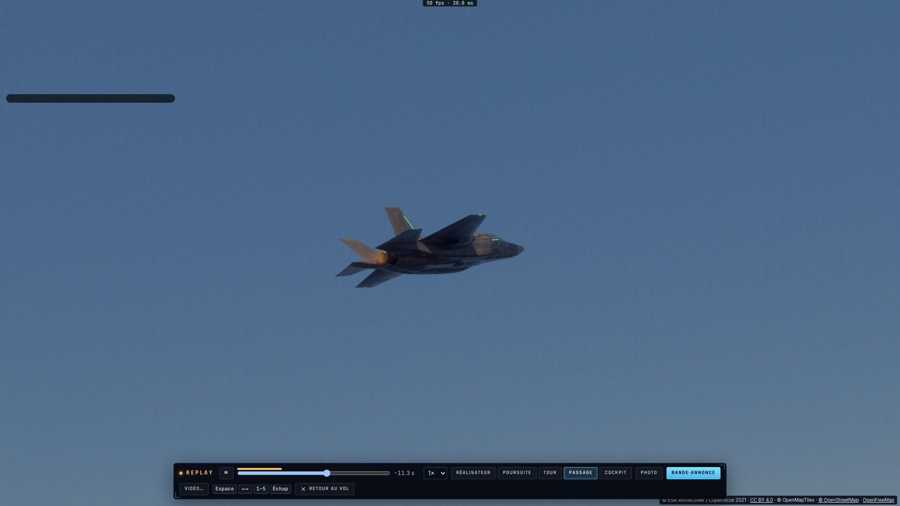
Les deux dernières minutes et demie gardées : poursuite, tour, passage, cockpit, sur la cible — il coupe tout seul. La bande‑annonce trouve les meilleurs moments et se rend en vidéo.
Les avions de ligne qui volent en ce moment au‑dessus de vous, les navires qui croisent au large — et trois porte‑avions qui font route face au vent.
Par l'ADS‑B (adsb.lol, OpenSky) : chaque avion à son modèle et sa taille, son indicatif, son immatriculation, ses feux, sa traînée ; son vol reconstruit sans saut, une minute en différé. On peut voler à son aile.
Cargos, pétroliers, ferries, chalutiers, voiliers à leur taille ; leurs feux de route la nuit, leur sillage de Kelvin tracé dans la mer.
Trois cascades de FFT, de la houle de 300 m aux vaguelettes de 12 cm, les moutons, le ciel reflété — et l'état de la mer du jour, lu chez Open‑Meteo.
À l'échelle, escortés de deux frégates, ils tanguent avec la houle ; leur ombre sur le pont, leur reflet sur l'eau. Le F‑35B s'y pose à la verticale et en redécolle court.
Le F‑35C catapulté du Ford, arrêté par l'un de ses trois brins ; l'officier d'appontage annonce « roger ball » et note chaque passage. Cas I, II ou III selon l'heure et le temps ; qualifications de jour, de nuit et par mer forte.
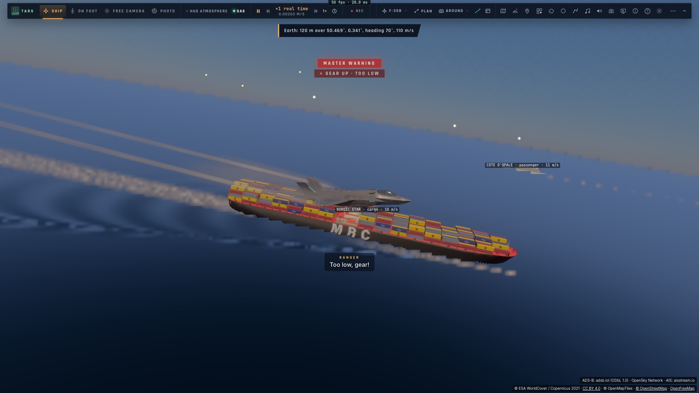
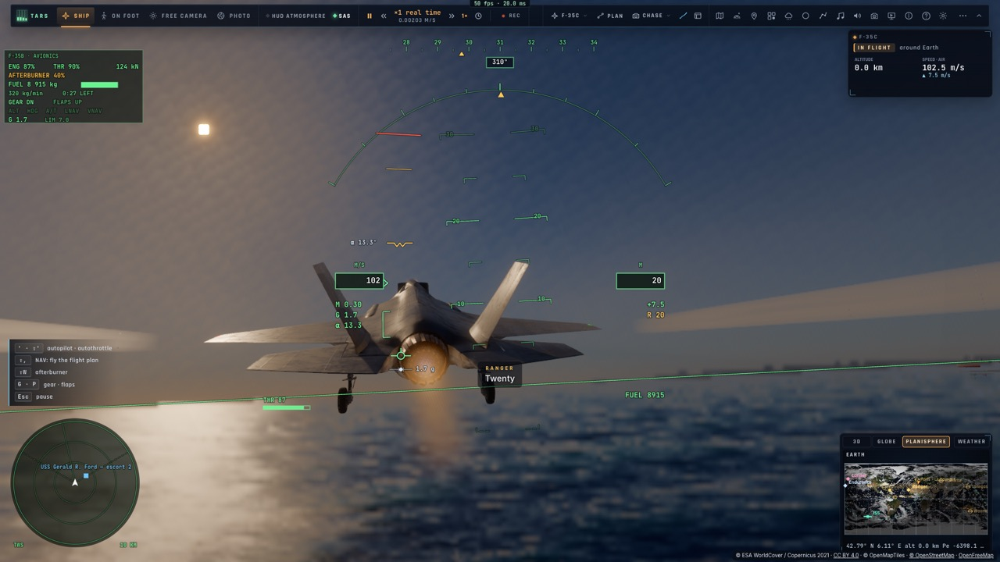
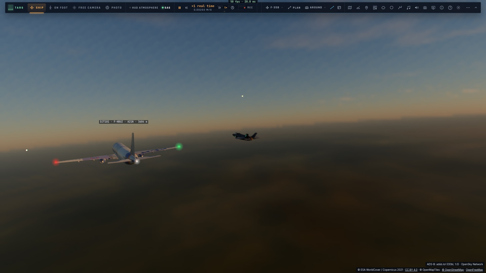
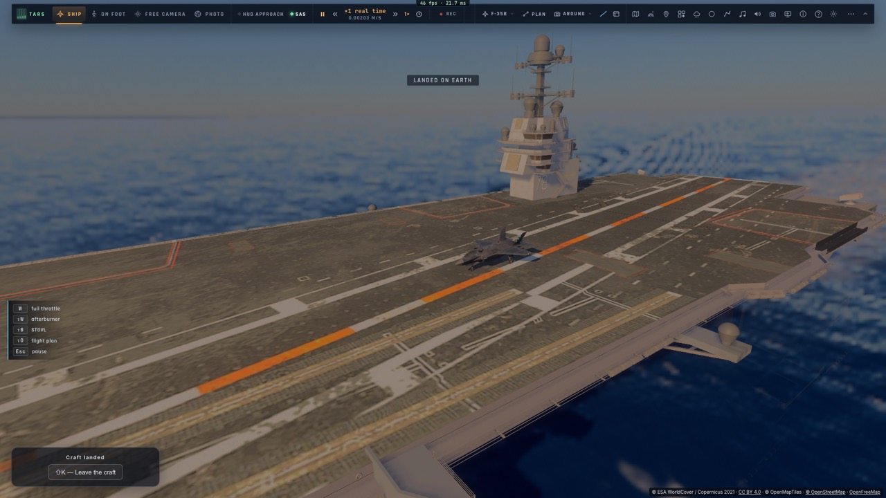
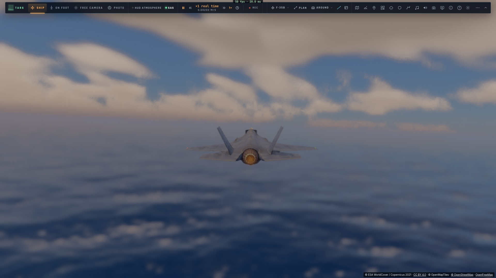
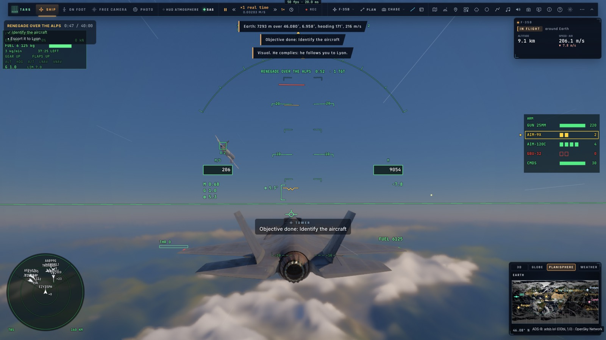
Treize missions, de la police du ciel à la défense du porte‑avions, et un éditeur pour écrire les vôtres — ou les dicter à TARS.
Renegade sur les Alpes reprend un vol de ligne réel : il coupe son transpondeur et vire au sud. L'intercepter, l'identifier, l'escorter jusqu'à Lyon.
Frappe en Corse depuis le Ford, frégates coulées au JSM à l'ouest de la Sardaigne, Red Air au large d'Hyères, patrouille acrobatique à Salon, qualifications d'appontage — seul ou en équipe, chacun son rôle.
Zones, portée des SAM, symboles OTAN, « Voler vers ». Placez SAM, drones, chasseurs, vols réels et porte‑avions d'un clic ; la mission se partage par un lien.
« Escorte l'A320 AFR123 jusqu'à Nice » : il écrit la mission, trouve Nice, reprend le vrai vol et la lance.
Treize vues d'exception, chacune à son heure, sa météo et son défi — et aussi la Mach Loop, l'Himalaya, Monument Valley, le Geirangerfjord, le lever de la pleine Lune en patrouille…
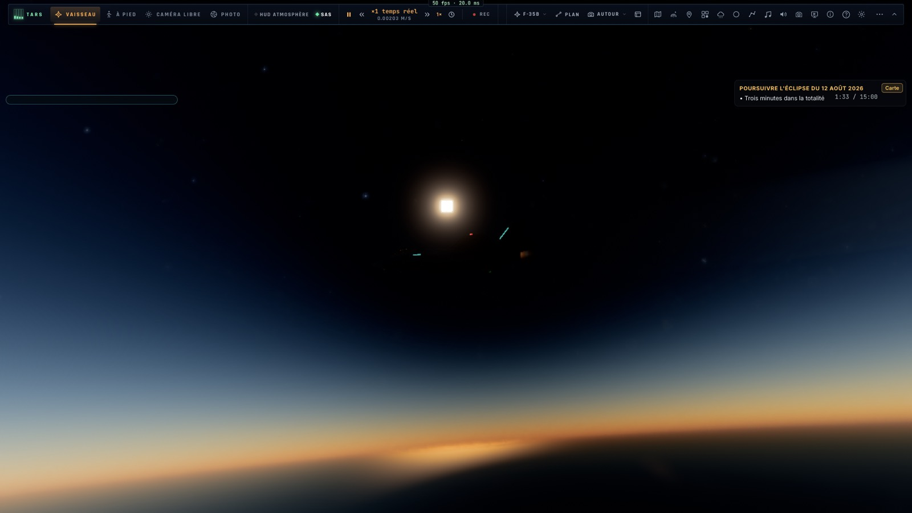
Poursuivie au‑dessus de l'Islande, à sa vraie date. Le défi : trois minutes dans la totalité à Mach 1,6, comme le Concorde en 1973.
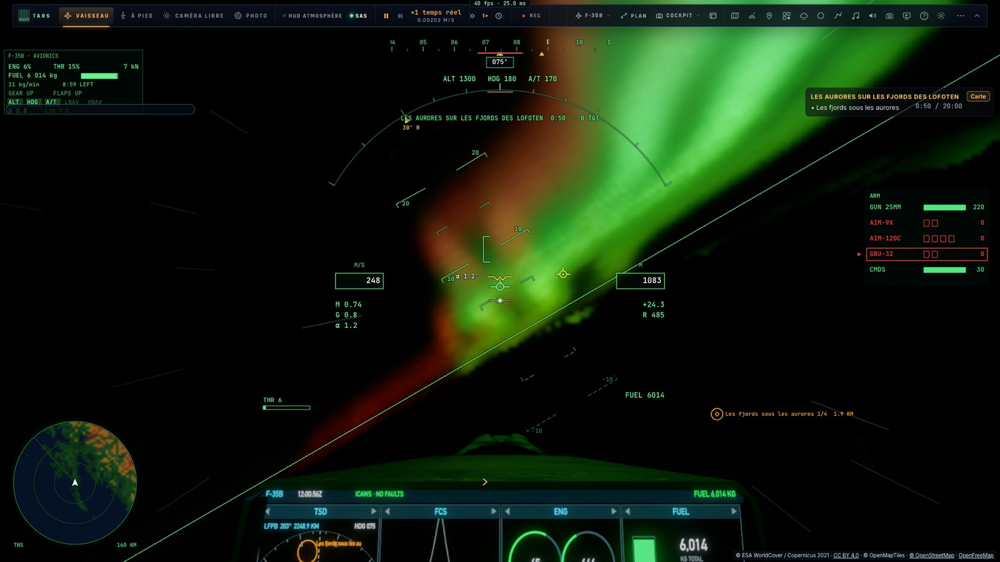
Le vert de l'oxygène, ses sommets rouges ; remonter les fjords jusqu'au Trollfjord sous 400 m.
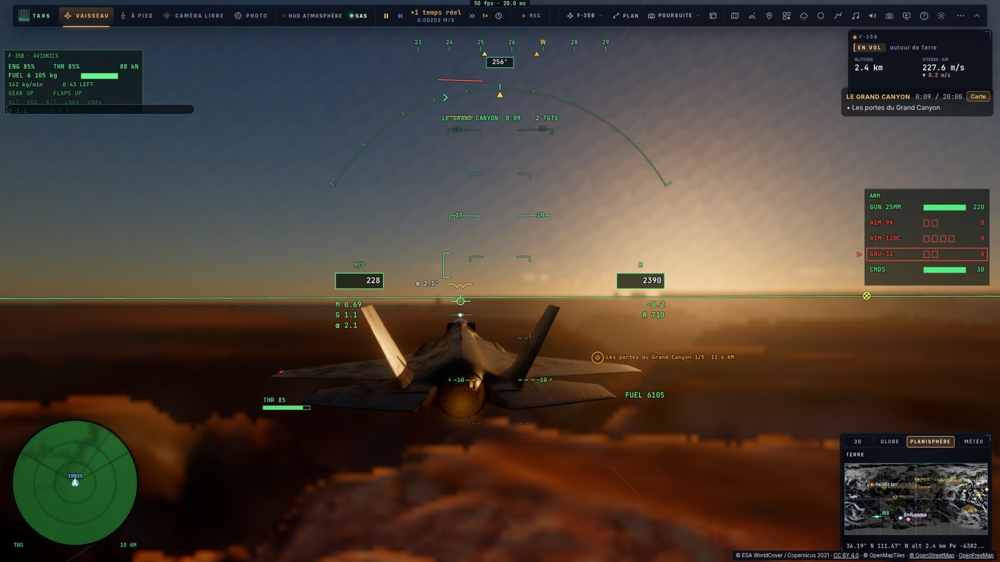
Suivre le Colorado au soleil du soir, porte après porte.
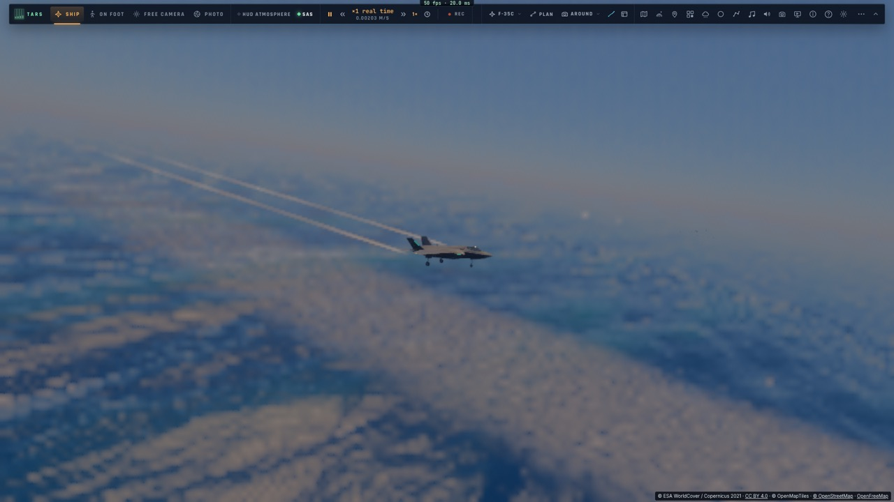
Une houle de 4,4 m, un pont qui tangue, et Paddles qui note.
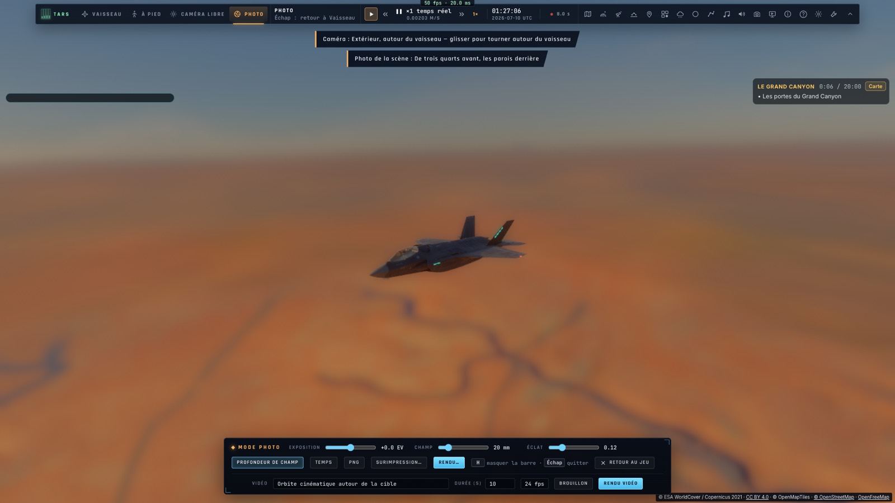
Le mode photo s'ouvre sur l'angle, le champ, l'exposition et la profondeur de champ de la scène.
Deux à quatre avions, huit formations, trois écartements — avec des ailiers IA ou avec vos amis.
Un à trois F‑35 IA, pilotés avec les forces du vrai avion : tenus à 1,3 m en losange, ils annoncent leurs contacts, tirent « Fox trois » et peuvent être abattus.
Par la roue ou à la voix : en losange, serrez, dégagement à droite, attente étagée, retour base, attaquez ma cible, engagez.
Pour passer de l'autre côté, l'ailier passe dessous et derrière le leader ; dans un virage tactique, les ailiers se croisent.
L'élément part 8 s après le leader ; à l'atterrissage, chacun vole sa propre approche vers son point de toucher. Et le passage en losange, devant la caméra.
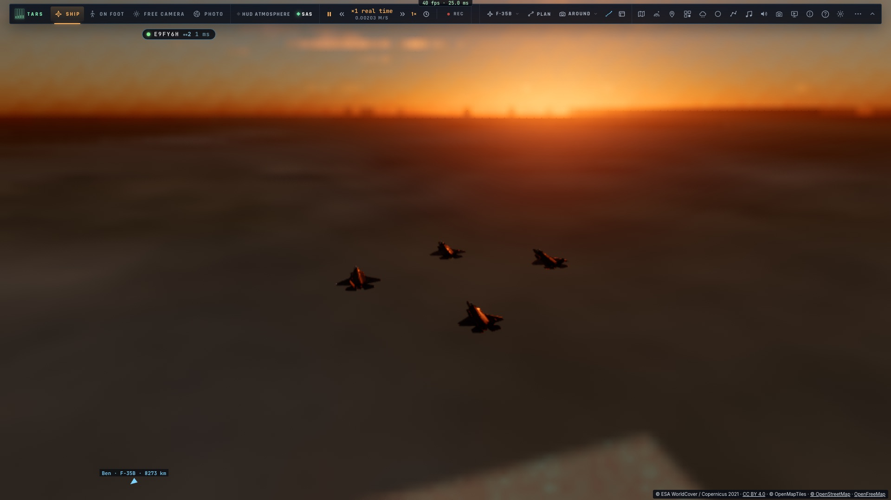
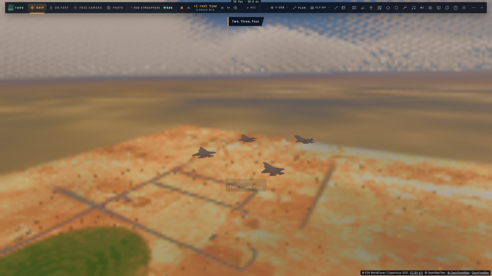
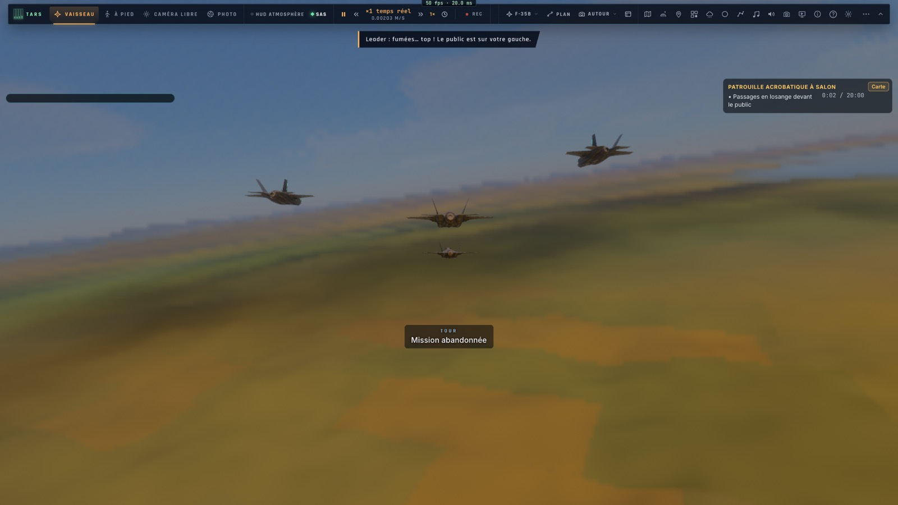
Parlez‑lui, ou écrivez‑lui. TARS connaît tout le vaisseau, chaque consigne de chaque autopilote, et peut tout faire dans le jeu — avec sa voix, son humour, et sa mémoire de vous.
Il planifie la mission, accélère le temps, attend la capture, circularise — et vous le dit. Un ordre s'exécute sans confirmation ; « annule » revient en arrière.
Les chiffres d'abord, rien n'est fait : vous acceptez ou refusez. Trois modes — agir, proposer, observer.
Télémétrie en direct, couloir de rentrée, écrans du jeu ; ses réflexes le réveillent à la fin d'un autopilote, à chaque phase de la rentrée, sur une alerte ou un écart.
Pour une analyse en plusieurs regards, il lance des copies de lui‑même, puis décide.
« /teleport orbit Lune 100 », « /cockpit », « /autopilot entry Edwards » : des commandes complétées en tapant, sans le modèle, sans coût.


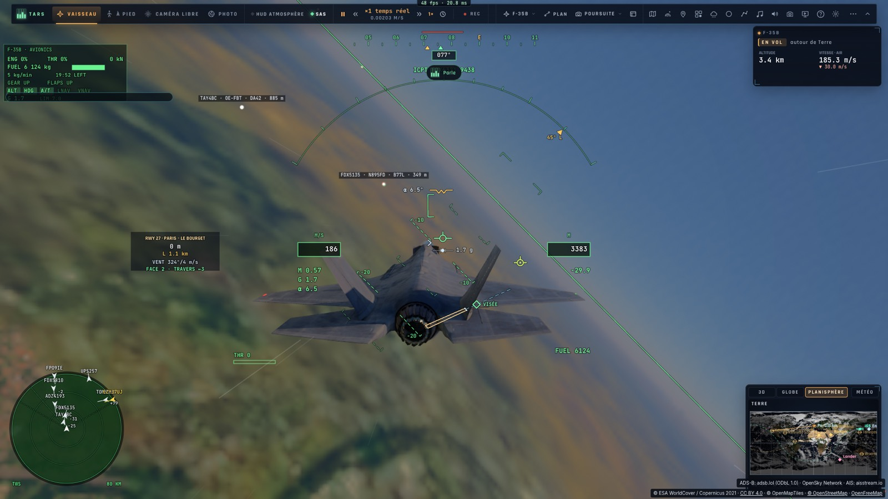
Onze pages écrites pour lui, en français et en anglais : le F‑35, l'énergie, le combat tournoyant, la patrouille, le porte‑avions, l'ILS, les urgences, le radar, les armes, le trafic. Il y cherche, répond dans vos unités, sans inventer de chiffre.
« Départ missile, 11 heures, 8 km — dégagement à gauche, leurres. » Sur ordre, il verrouille, tire, largue les leurres, intercepte le vrai trafic.
L'ailier, Darkstar l'AWACS, Mother le porte‑avions, Paddles l'officier d'appontage : chacun sa voix, son nom en sous‑titre, le grésillement de la radio. En salle, la radio de votre patrouille s'entend chez les autres pilotes.
Avec votre propre clé OpenRouter (connexion en un clic, gardée dans votre navigateur). Sans clé, TARS répond et obéit aux ordres courants hors ligne.
Dix‑huit leçons — premier vol, tour de piste, atterrissage, ILS, cas I sur le Ford, patrouille, interception, canon et dix figures de voltige — chacune avec sa carte, son schéma et ses chiffres.
« Voir la démonstration » : TARS vole toute la leçon et dit chaque étape au moment où il la commence.
En mode guidé, il vole la première partie, puis « À vous les commandes ». Près d'un autre avion, le vôtre reste trimé jusqu'à ce que vous repreniez le manche.
Vos écarts mesurés, le pire annoncé d'abord avec sa correction — « Bas — sous le glide… » —, votre trace dessinée en direct sur le schéma de la manœuvre.
Une note sur 20 et une lettre, les courbes face à l'idéal, la note de chaque phase et les deux points à travailler. Puis : réessayer.
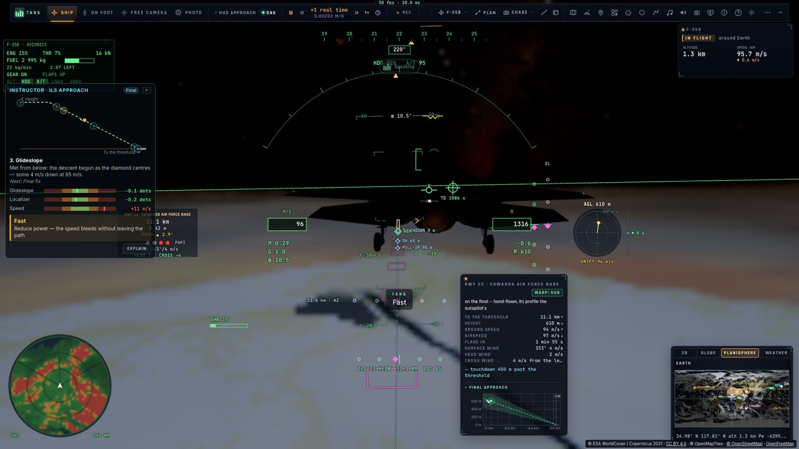
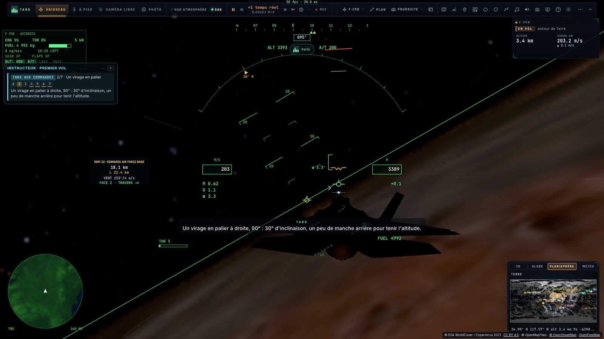
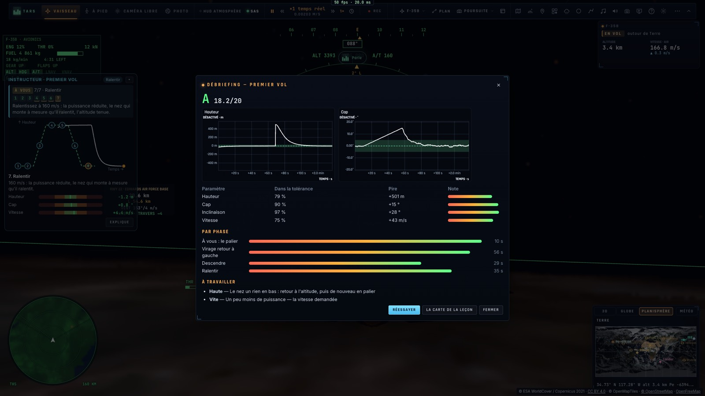
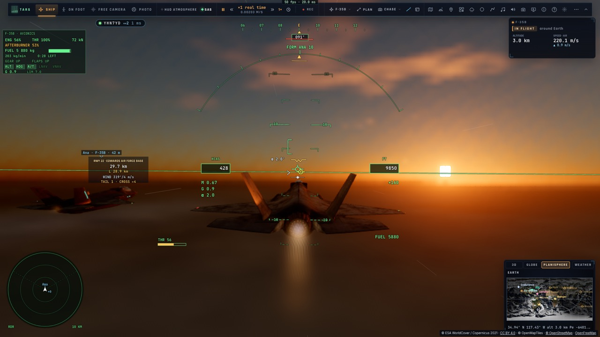
Deux à quatre pilotes dans un même monde, avec des spectateurs et des écrans à côté. Un code de six lettres ou un lien suffit ; tant qu'on ne demande pas de salle, rien ne se connecte.
Chacun son engin, les autres dessinés au présent, gouvernes et postcombustion comprises. « Ailier de… » dans la roue : le pilote automatique vous met à sa première place libre.
Votre voix en direct, passée par une radio de casque avec les bips Quindar d'Apollo ; à la voix, en tenant une touche ou toujours.
Chacun pour soi, deux équipes, ensemble contre les agresseurs, course de portes, concours d'atterrissage. Hors match, en F‑35, tout est une cible — les autres joueurs, les ailiers IA, les avions de ligne et navires réels que voit le radar — et l'on revole 6 s après.
À pied sur la Terre, la Lune ou Mars, en orbite avec un warp voté par tous, amarrés l'un à l'autre — et autour de Miller, où votre horloge ralentit sous les yeux des autres.
Un téléphone ou une tablette scanne le QR code : PFD, navigation, carte OpenStreetMap de nuit, radar, systèmes, plan de vol, télémétrie — sans WebGPU.
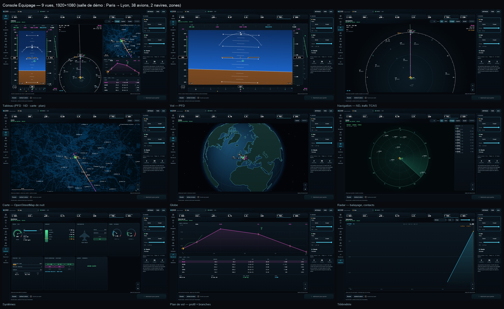
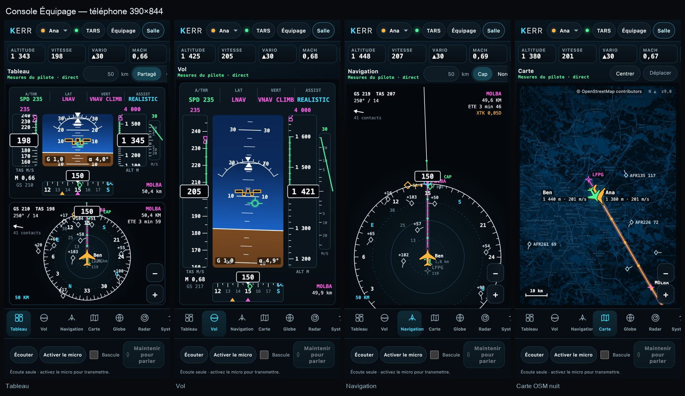
Pilotage à la Kerbal Space Program, planificateur de vol, carte 3D, cockpit vivant — et des autopilotes quand vous voulez regarder par le hublot. Sans installation, et même hors ligne.

Écrans de télémétrie en direct, manches qui bougent avec vos commandes, et une vue cabine pour regarder autour de soi.

Trajectoires prédites, nœuds de manœuvre à tirer à la souris, frise temporelle, globe et planisphère avec la trace au sol.

Orbite, survol, retour libre, rendez‑vous, trou de ver : les trajectoires sont visées en n corps, les allumages se font seuls.

Maintiens d'attitude, circularisation, approche, atterrissage, décollage et amarrage automatiques.

88 constellations, les étoiles nommées, grilles équatoriale et horizontale, et un télescope qui suit sa cible.

AZERTY ou QWERTY, manette Xbox ou PlayStation, ou un manche et une manette des gaz au doigt sur téléphone.

Moteur granulaire, RCS, vent, cabine, son 3D au casque, Doppler et bang ; les annonces de finale, Houston et la tour à la radio, la musique aux grands moments — tout est généré en direct.

Rendu hors ligne à n'importe quelle résolution, export PNG 16 bits et EXR, prises de vue rejouées en vidéo.
Le Ranger plonge dans la bouche et ressort de l'autre côté, face à Gargantua. Rendu par le simulateur, image par image.
Toutes ces images sortent du simulateur. Le carnet complet des rendus et de leur physique est dans l'Atlas de Kerr.
Ouvrez la page, appuyez sur U : le Ranger quitte le pas de tir. Le reste du chemin jusqu'à Gargantua, c'est vous qui le tracez — ou appuyez sur F6 et demandez‑le à TARS. Envie de chasse ? La roue (Tab maintenu) vous met aux commandes d'un F‑35. À plusieurs ? Échap › Réseau — jouer ensemble.
Navigateur avec WebGPU : Chrome, Edge ou Arc récents · Safari avec WebGPU activé